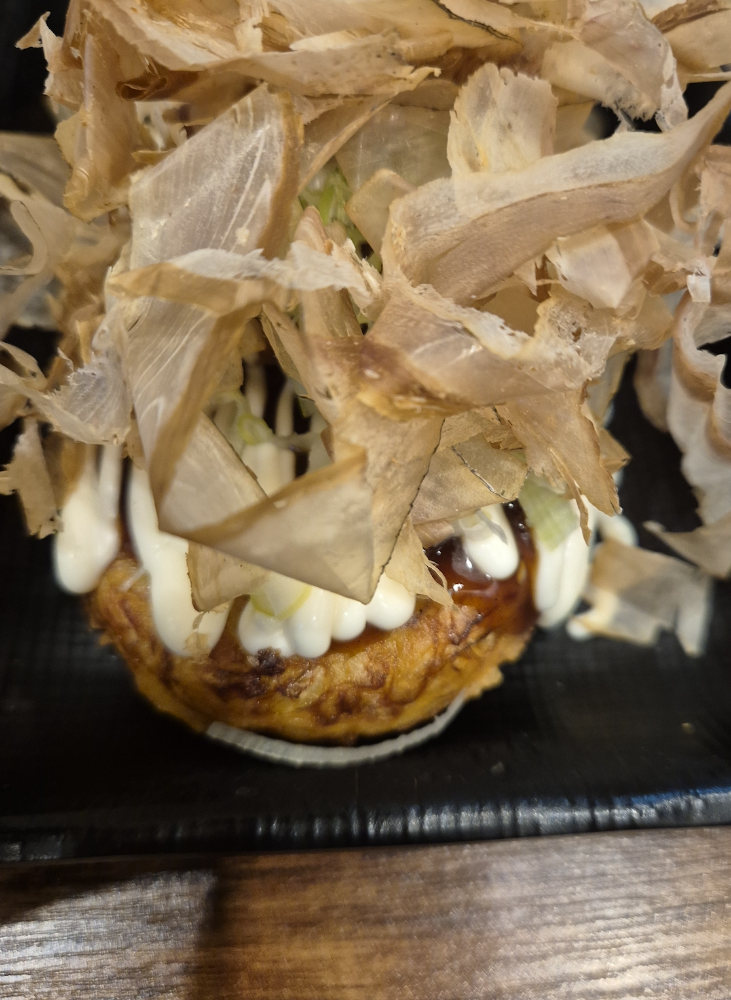
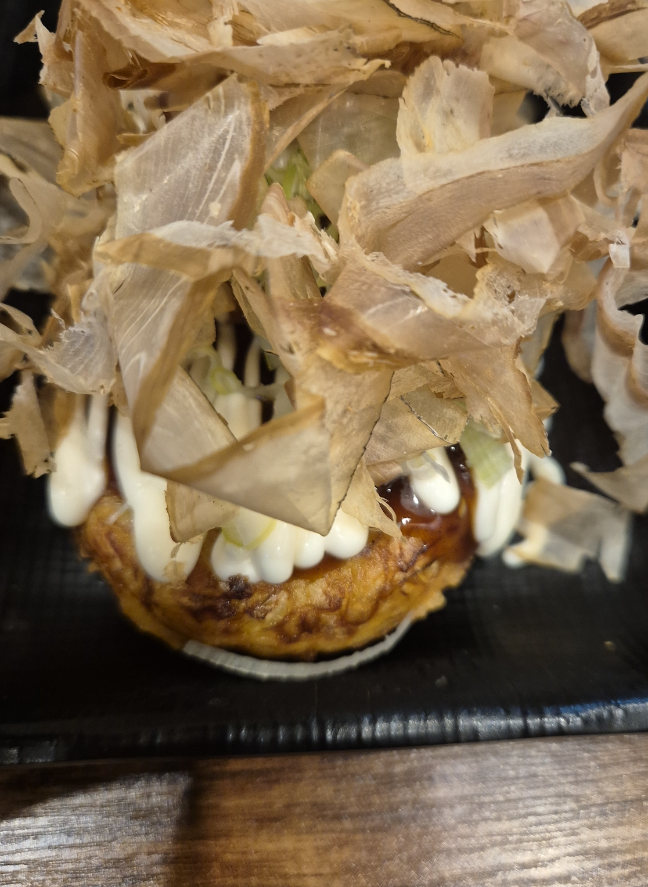
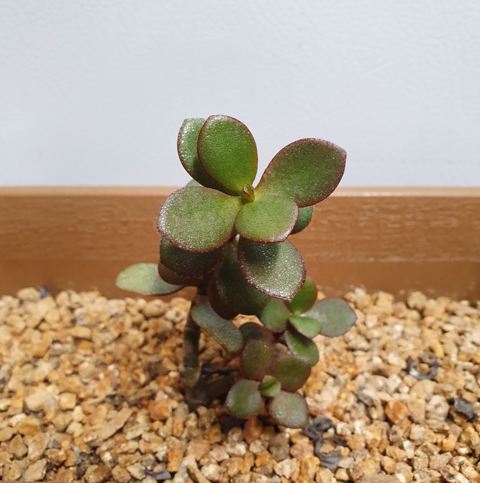
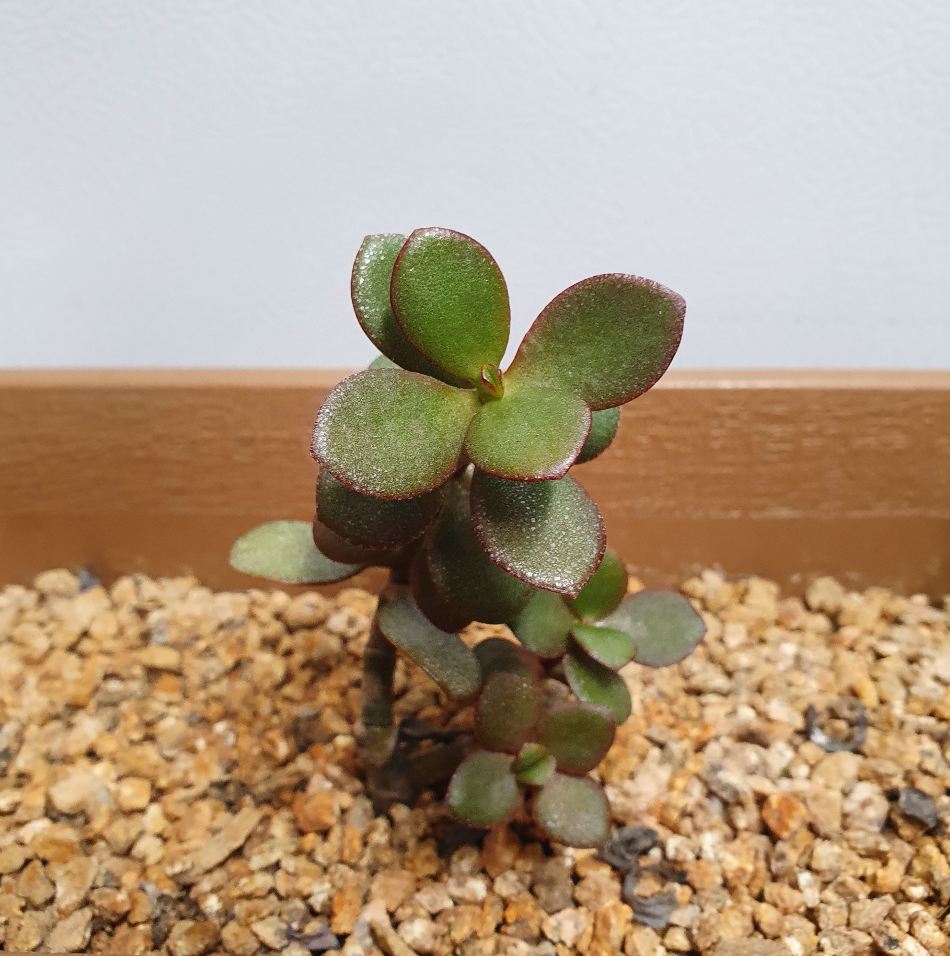

 

Life-Changing Book

I have been reading English literature, from classics to modern works, since my college days. I was drawn to the fact that every word in literature offers inspiration and new insights to its readers. These writings serve not just as tools for communication, but also play an important role in creating new values by connecting people and offering a shared perspective on the world. Moreover, based on the culture and history reflected in the pages, I believe literature helps us reflect on the past and present world, and even imagine the future. Among them, the most memorable work is Dead Poets Society. The original script was written by Tom Schulman and later novelized by Nancy Kleinbaum. This work is so famous that many people are familiar with its story through the 'O, Captain! My Captain!' verse of Walt Whitman. Through this work, I was once again reminded of the value of education and, even more so, the way individuals live their lives.